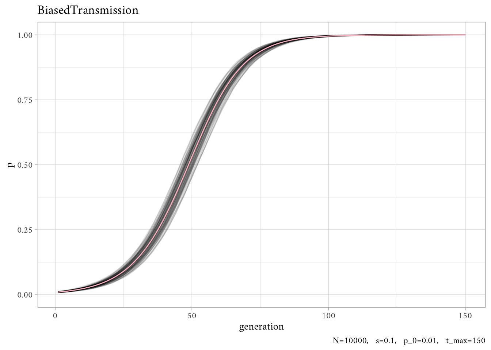
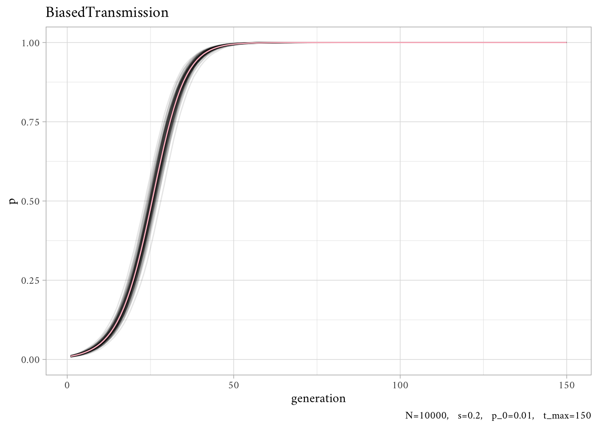

library(tidyverse)
theme_set(theme_light(base_family = "Amiri"))
library(future.apply)
plan(multisession, workers = parallel::detectCores() - 1L)4 Biased Transmission 1
This notebook looks at trait-based copying, often called “direct” or “content” bias. This is also often called cultural selection.
Note. All quotations come from here.
In this notebook I also replace loops entirely with functional programming.
As in Chapter 2 and Chapter 3, we assume two traits \((A, B)\). Let’s further assume that biased transmission favors \(A\) (perhaps it’s “a more effective tool, more memorable story, or more easily pronounced word”).
We’re not including any mutation in the model, so we need to include some \(A\)s at the beginning of the simulation otherwise it would never appear. However, let’s make it initially rare. Then we can see how selection favors this initially-rare trait.
For each \(t\), each agent choose another agent from the previous generation at random. If that chosen agent has \(A\), then the focal agent copies \(A\) with probability \(s\).
BiasedTransmission <- function(
N, # number of agents,
s, # transmission probability,
p_0, # initial proportion of trait "A"
t_max # number of generations
) {
agent <- sample(c("A", "B"), size = N, replace = TRUE, prob = c(p_0, 1-p_0))
agent_list <- purrr::accumulate(
.x = 2:t_max, ## this sequence gets discarded with the ... in the function call
.init = agent,
.f = function(agent, ...) {
previous_agent <- agent
# for each agent, pick a random agent from the previous generation
# as demonstrator and store their trait
demonstrator_trait <- sample(previous_agent, N, replace = TRUE)
# get N random numbers each between 0 and 1
copy <- runif(N)
# if demonstrator has A and with probability s, copy A from demonstrator
agent[demonstrator_trait == "A" & copy < s] <- "A"
return(agent)
})
p <- purrr::map_dbl(agent_list, function(agent) sum(agent == "A") / N)
return(p)
}We also use the same helper functions used in Chapter 3: rerun_parallel and plotSimulation.
Code
rerun_parallel <- function(S, f, ...) {
stopifnot(is.function(f))
params <- list(...)
## parallel runs
require(future.apply)
plan(multisession, workers = parallel::detectCores() - 1L)
sim <- future_replicate(S, do.call(f, params))
colnames(sim) <- paste0("run", 1:S)
## data processing
output <- tibble::as_tibble(sim) |>
tibble::rowid_to_column("generation")
## adds attributes to output
structure(output, params = params, model = deparse(substitute(f)))
}
plotSimulation <- function(rerun_out) {
params <- unlist(attr(rerun_out, "params"))
param_labels <- paste(paste(names(params), params, sep = "="), collapse = ", ")
avg <- rowMeans(rerun_out |> select(!generation))
rerun_out |>
pivot_longer(!generation, names_to = "simulation", values_to = "p") |>
ggplot(aes(generation, p)) +
geom_line(alpha = 1/10, aes(group = simulation)) +
ylim(0, 1) +
geom_line( ## average
data = tibble(generation = 1:params[["t_max"]], p = avg),
color = "pink"
) +
labs(caption = param_labels, title = attr(rerun_out, "model"))
}Here, we’ll start with a population that has a small number of trait \(A\). We will do \(p_0 = 0.01\).
out <- rerun_parallel(S = 100, BiasedTransmission, N = 10000, s = 0.1, p_0 = 0.01, t_max = 150)
plotSimulation(out)
Let’s increase the strength of selection, \(s = 0.2\).
out <- rerun_parallel(S = 100, BiasedTransmission, N = 10000, s = 0.2, p_0 = 0.01, t_max = 150)
plotSimulation(out)
Note. Henrich (2001) links s-shaped diffusion curves to this form of biased cultural transmission.
Exercise
- Change ss in BiasedTransmission to sasa, and add a new parameter sbsb which specifies the probability of an agent copying trait BB from a demonstrator who possesses that trait. Run the simulation to show that the equilibrium value of pp, and the speed at which this equilibrium is reached, depends on the difference between sasa and sbsb. How do these dynamics differ from the muamua and mubmub you implemented in Model 2 Q5?